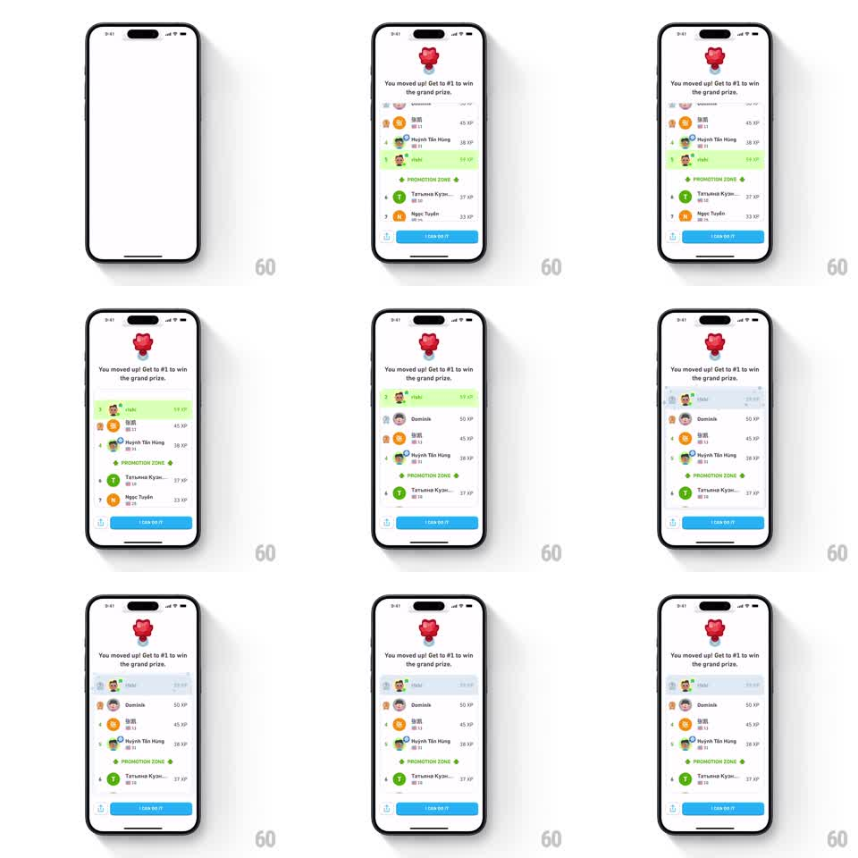

Media
Frame-by-frame

Rebuild this animation 1:1: Duolingo's leaderboard climb - the league screen reframes around the user's row, which slides up past rivals into the promotion zone with a green highlight while ranks renumber, under a "You moved up!" header with the league gem.

Rebuild this animation 1:1: Duolingo's leaderboard climb - the league screen reframes around the user's row, which slides up past rivals into the promotion zone with a green highlight while ranks renumber, under a "You moved up!" header with the league gem. ## Integration Integration: stack-agnostic spec - springs given as stiffness/damping, timed motions as duration + curve; map every value to your framework and animation library of choice. ## Scene White league screen. Top: a red-ruby league gem, the headline "You moved up! Get to #1 to win the grand prize." Below: a ranked list of ~7 rows (rank number, circular avatar, username, XP right-aligned), a green PROMOTION ZONE divider with arrows partway down, and a blue "I CAN DO IT!" button pinned at the bottom. The user's row carries a light green highlight. ## Motion spec Pattern: animated list reorder with highlight tracking. - Entrance: the list fades in from a slight offset (250ms ease-out) with the user mid-table. - The climb: the user's highlighted row slides up row-by-row (each hop ~350ms, spring ~300/24), overtaking one rival at a time; passed rows slide down one slot in the same beat. - Rank numerals on affected rows count down/up with a quick vertical digit slide (150ms). - When the user row crosses the PROMOTION ZONE divider, the divider flashes green (200ms) and the row's highlight brightens (opacity 0.6 -> 1.0). - Final settle: the user row lands at its new rank with a small scale pulse (1.0 -> 1.04 -> 1.0, 200ms); XP values on shifted rows crossfade if they changed. ## Calibration - The user's green row is the camera - it must stay visually tracked through every hop; rivals move only to make room. - Hops are discrete and rhythmic, not one continuous scroll. ## Reduced motion The list crossfades from old order to new order over 250ms; the highlight stays on the user row throughout; no per-row hops. ## Don't miss - The PROMOTION ZONE divider stays pinned in place; rows move through it, it never scrolls with them. - The header and CTA never move - only the list reorders.